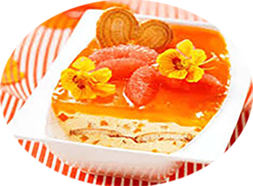

Tiramisu glacé mangue pamplemousse

Pour 8 personnes
Préparation : 20 mn
Repos 4h
Ingrédients pour environ 1 litre de glace :
- 500 g de Mascarpone
- 100 g. de Sucre glace
- 200 g. de Coulis de mangue
- 4 Mangue
- 4 Pamplemousse
- 4 Oeuf
- 16 Biscuit
- 8 Fleurs de Capucine
Recette
- Séparer les jaunes des blancs d’œufs.
- Monter en neige les blancs en serrant avec le sucre glace.
- Tailler les mangues en petits dés.
- Séparer les pétales des fleurs.
- Battre vigoureusement les jaunes d’œufs et le mascarpone.
- Ajouter les dés de mangue et les pétales de fleurs à cette préparation puis incorporer délicatement les blancs en neige.
- Couper les pamplemousses en veillant à garder quelques quartiers pour le décor.
- Presser le reste des pamplemousses.
- Imbiber les biscuits dans le jus de pamplemousse .
- Dresser dans un plat en plusieurs couches en alternant les biscuits puis la préparation au mascarpone.
- Recouvrir le tout du coulis de mangue ----> Recette coulis de mangue <----
- Déposer au congélateur pendant au minimum 2h.
|